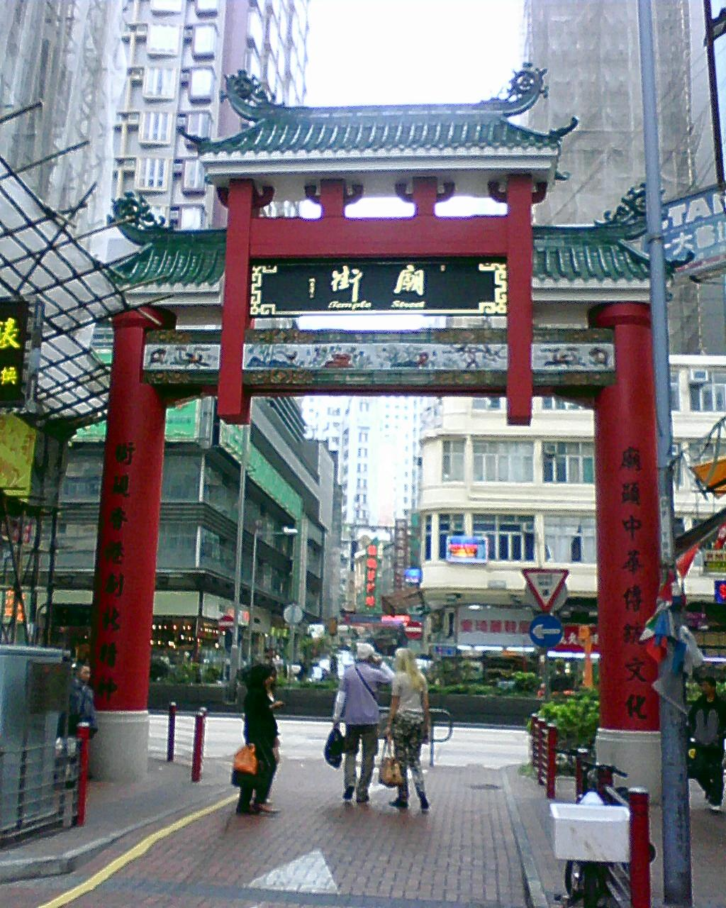

Hong Kong x India
07 · Nights + Markets
After dark
Make the evening feel like a second city.
For social-first travellers, Hong Kong’s after-dark value is huge: markets, trams, harbour lights, food streets and late photo walks.

For social-first travellers, Hong Kong’s after-dark value is huge: markets, trams, harbour lights, food streets and late photo walks.